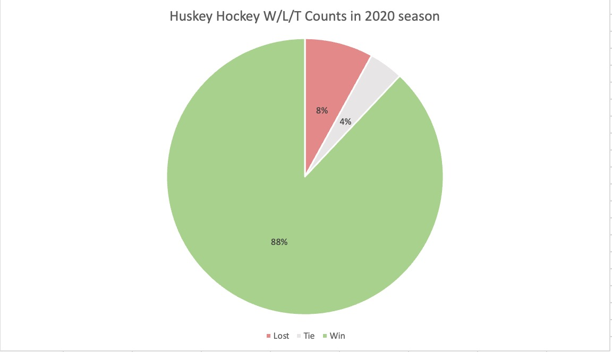
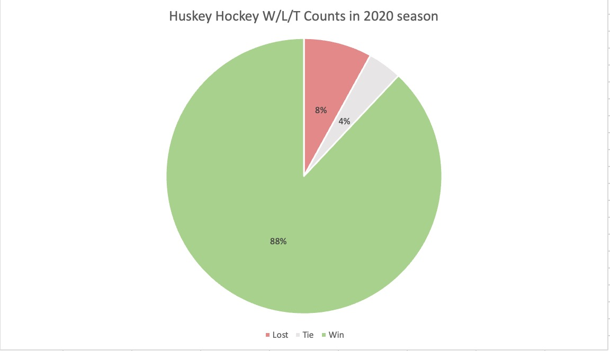

Marks
- Area - state has width and height
- Line - bar at top showing total electoral votes
Channels
- Color hue
- Represents attribute of type Categorical
- Good choice because voting choice is categorical data so it makes sense to use color hue. Colors align with real world heuristics of data (blue = democrat and red = republican).
- Position horizontal on common scale
- Represents attribute of type Ordered
- Good choice because total voter count for each candidate is magnitude based.
Colormap(s)
- Categorical
- Represents attribute of type Categorical
- Good choice because voting choice is categorical data so it makes sense to use color hue. Colors align with real world heuristics of data (blue = democrat and red = republican).
Marks
- Point
- Line - bar at top showing divergence of average
Channels
- Color hue
- Represents attribute of type Categorical
- Good choice because clear distinction between colors
- Color saturation
- Represents attribute of type Quantitative Ordered
- Bad choice because different saturations aren't distinct enough from each other and is harder to read when already using two different hues
- Position both
- Represents attribute of type Quantitative Ordered
- Good choice because clearly shows distinction of different data points
- Position horizontal on common scale
- Represents attribute of type Quantitative Ordered
- Good choice because shows clearly how different colors align to an above or below average score
Colormap(s)
- Divergent
- Represents attribute of type Quantitative Ordered
- Good choice, shows different levels of LWTS and allows for clear distinguishing between above and below average scores.
Marks
- Area
Channels
- Color hue
- Represents attribute of type Categorical
- Good and bad choice for color. Good because it matches thematically and is a commonly used color combination to represents wins vs losses, but bad because of red and green color blindness.
- Tilt
- Represents attribute of type Ordered
- Good because it allows for clear understanding of how many wins vs losses vs ties there were in the season.
Color map(s)
- Represents attribute of type Categorical
- Good and bad choice for color. Good because it matches thematically and is a commonly used color combination to represents wins vs losses, but bad because of red and green color blindness.